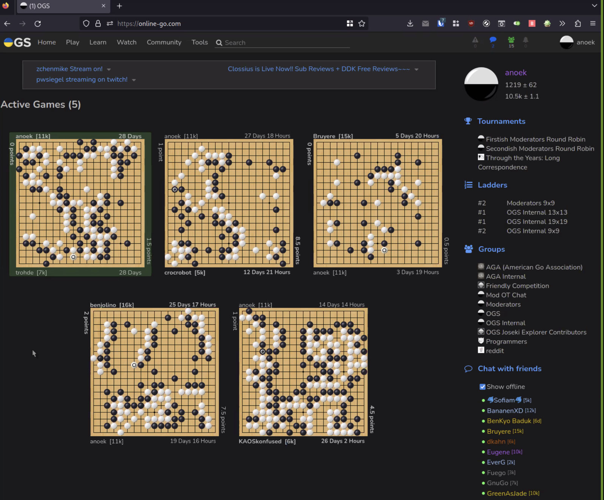
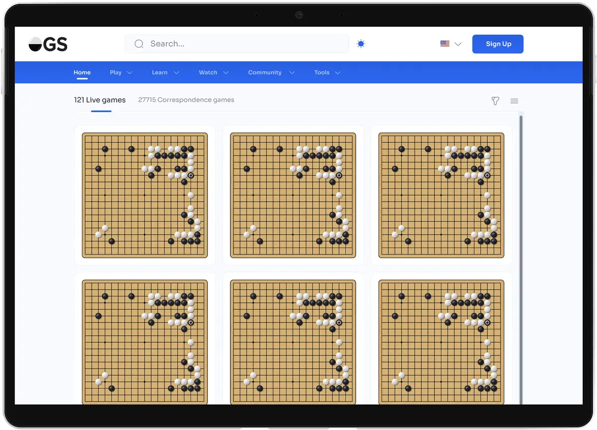
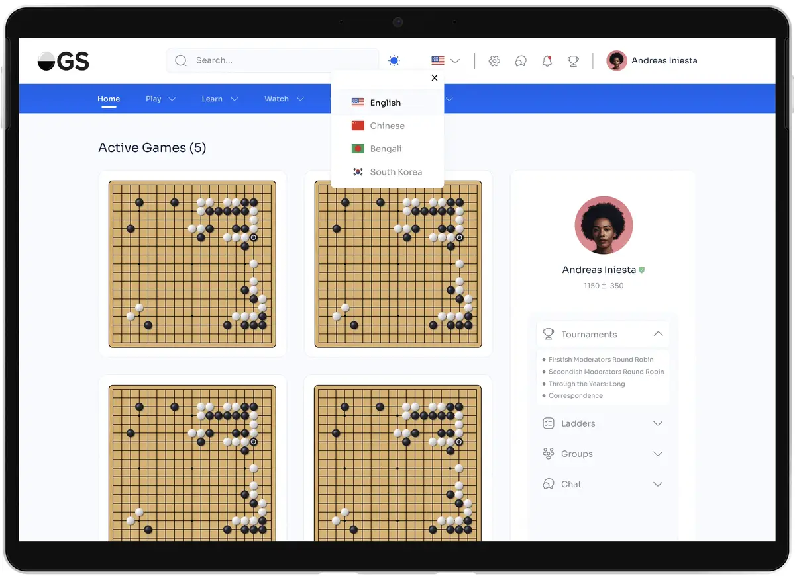
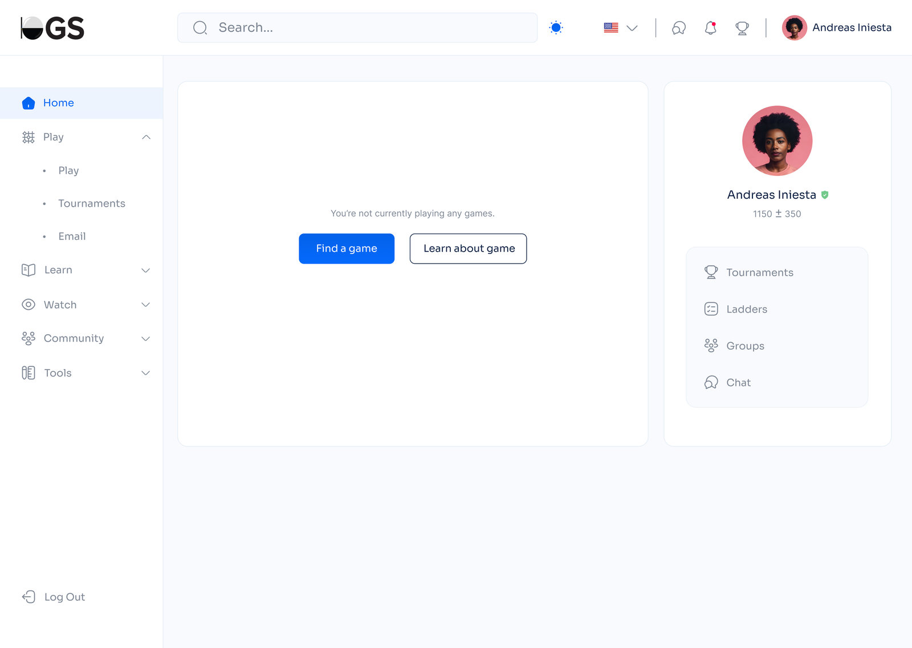
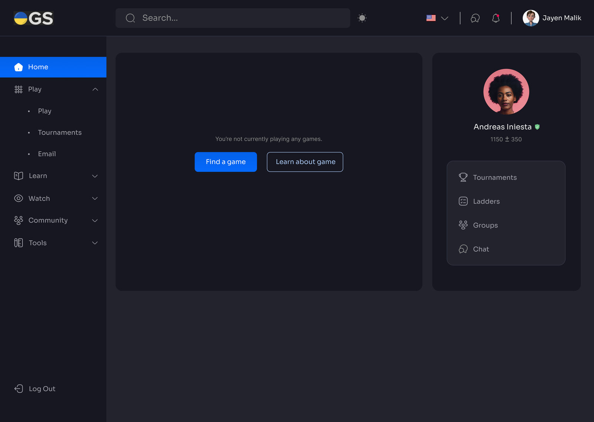

01 — Introduction
문화가 달라도, 바둑을 쉽게 시작할 수 있도록.
한국에서 바둑이라 부르는 Go는 수백 년의 역사를 가진 전략 게임입니다. Online Go Server(OGS)는 온라인 대국과 학습, 커뮤니티로 전 세계 플레이어를 연결합니다.
웹과 모바일(iOS·Android) 모두에서 대국할 수 있는 OGS의 리드 UX/UI 디자이너로 디자인 파트를 맡았습니다. 리서치, 정보구조, 데스크톱·모바일 UI, 디자인 시스템, 프로토타입과 사용성 테스트를 담당했고, 개발은 OGS의 엔지니어와 함께 진행했습니다.

- Project
- Online Go Server (OGS)
- Industry
- 게임 · 온라인 커뮤니티
- Service
- Globalization / Product UX / User Experience
- Platform
- 웹 · 모바일(iOS/Android)
- Year
- 2023
- Role
- 리드 UX/UI 디자이너 · 소프트웨어 엔지니어, 프로덕트 매니저, CEO와 협업
02 — The Challenge
익숙하지 않은 게임의 첫 문턱
익숙하지 않은 전통 게임을, 새로 오는 글로벌 사용자도 다가갈 수 있게 만드는 일이었습니다.
- 복잡한 온보딩대국을 시작하기 전 단계가 많고 불분명해, 가입 과정에서 이탈이 많았습니다.
- 혼란스러운 탐색과 매치메이킹대기실 입장과 대국 상대 찾기 방식이 이해하기 어려웠고, 실력이 맞지 않는 상대와 연결되기도 했습니다.
- 일관되지 않은 UI와 아이콘화면마다 시각 디자인과 아이콘 언어가 달라, 무엇을 먼저 봐야 할지 알기 어려웠습니다.
- 초보자에게 높은 진입 장벽정보가 빽빽한 홈 화면에 분명한 다음 행동이 없어, 처음 온 사용자가 어디서 시작할지 몰랐습니다.
- 모바일과 데스크톱의 차이기기마다 경험이 달라, 초보자와 모바일 사용자의 재방문이 낮았습니다.


03 — Understanding the Users
누가, 어디서 멈추는지부터
설문, 사용성 테스트, 카드 소팅으로 초보·중급 플레이어 20명의 경험을 살펴보고, 10개 이상의 바둑 플랫폼을 비교했습니다. 대기실 매치메이킹 UX, 모바일 접근성, 커뮤니티 기능을 중심으로 KGS와 Tygem을 자세히 분석했습니다.
- 20명이 참여한 2분 설문 (초보·중급 플레이어)
- 10+개 경쟁 플랫폼 분석 (KGS · Tygem 중심)
- 60%대기실 입장·매치메이킹 과정이 헷갈린다고 응답
- 40%아이콘이 오래되고 직관적이지 않다고 응답
- 90%더 단순한 레이아웃과 깔끔한 글꼴을 선호
| Online-Go | Tygem | KGS Go Server | |
|---|---|---|---|
| 사용자 기반 | 강점 | 강점 | 강점 |
| 기능 | 강점 | 부족 | 부족 |
| 배우기 쉬움 | 부족 | 강점 | 부족 |
| 무료 | 강점 | 부족 | 부족 |
| 브랜딩 | 강점 | 강점 | 강점 |
강점부족
무엇이 문제였나
- 작업 흐름이 복잡하고 여러 곳에 흩어져 있다
- 시각 디자인과 아이콘 언어가 일관되지 않다
- 온보딩과 대국 시작 방법이 분명하지 않다
- 홈 화면이 정보로 가득해 부담스럽다
리서치 수치는 2023년 프로젝트에서 진행한 소규모 설문(20명) 결과입니다.
04 — From Cultural Context to Product Experience
문화의 맥락을, 이해되는 제품 경험으로
번역만으로는 부족했습니다. 처음 보는 게임의 구조와 개념이 화면만 보고도 이해되도록, 정보 구조와 흐름 자체를 다시 설계했습니다.
- 명확한 정보구조내비게이션을 Play · Learn · Watch · Community 중심으로 다시 짜고, 핵심 기능이 먼저 보이도록 이름과 위계를 정리했습니다.
- 이해하기 쉬운 탐색처음 보는 용어 대신 직관적인 이름을 쓰고, 지금 어디에 있는지와 다음에 갈 곳을 분명하게 보여 주었습니다.
- 신규 사용자 중심 온보딩단계와 진행 상태가 보이는 가입 흐름과, 실력에 맞춘 선택형 빠른 튜토리얼을 설계했습니다.
- 게임 참여와 매치메이킹바둑판 크기와 대국 속도를 고르면 바로 상대를 찾는 빠른 대국 찾기로, 대국 시작까지의 결정을 줄였습니다.
- 글로벌 사용자에게 일관된 경험언어 선택과 국가 표시를 가입 직후 흐름에 넣고, 화면마다 같은 색·글꼴·아이콘 규칙을 적용했습니다.
- 반응형 제품 디자인데스크톱과 모바일에서 같은 구조와 행동이 이어지도록 반응형 화면을 함께 설계했습니다.


웹과 모바일(iOS·Android) 어디서든 같은 대국 경험 — 바둑판, 플레이어 정보, 남은 시간을 기기마다 같은 위계로 설계했습니다.
05 — Design Exploration & Solution
그려 보고, 비교하고, 다시 확인한 화면







Online-Go · Color
- Primary / 1
#0461E9 - Primary / 2
#1D2333 - Secondary / 1
#F9FAFE - Secondary / 2
#E5EEF6 - Text / B-1
#0F2346 - Text / B-2
#8C94A1
Text Black GrayScale
Sora Heading · Montserrat Paragraph


“OGS를 좋아하는데, 이제 훨씬 쓰기 쉬워요.”
— 게릴라 테스트 참가자, OGS 사용자
06 — Results & Impact
더 많은 사람이, 더 오래 두게 되었습니다
Online Go Server는 리디자인과 별개로, 지금도 전 세계 바둑 플레이어가 이용하는 공개 서비스입니다. 아래 수치는 플랫폼 전체의 규모가 아니라, 리디자인 이후 프로젝트에서 기록된 변화입니다.
Global players
+20%
영어권이 아닌 지역에서 늘어난 신규 가입
- +15%월간 활성 사용자(MAU)
- +20%신규 가입자
- +25%매치메이킹 완료율
- +28%평균 세션 시간
수치는 2023년 프로젝트 기록(기존 포트폴리오) 기준이며, 여러 개선이 함께 적용된 결과입니다.
07 — Explore the Live Product
직접 둘러보기
OGS는 누구나 들어가 볼 수 있는 공개 서비스입니다. 현재 사이트는 이 프로젝트 이후에도 OGS 팀이 계속 운영하고 바꿔 온 화면이라, 이 사례의 디자인과 다를 수 있습니다.
Visit Online Go Server (새 탭에서 열림)프로젝트 문의하기
Next Project